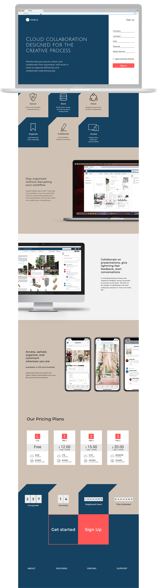

Designing an effective product landing page
ROLE
- Graphic Designer
DELIVERABLES
- Style Guide
- Logo Design
- Branding
SPECIFICATIONS
DURATION
- 2 Weeks
TOOLS
- Figma
- InVision
- UsabilityHub
- Adobe Photoshop
CONTEXT
The Problem
Nimbus is a cloud collaboration platform designed with the creative process in mind. For the landing page of Nimbus, the challenge is to create a layout that is visually engaging without overpowering the product itself.
The Solution
The goal is to build trust with the creative community by honestly presenting the platform and its capabilities as they are. The design of the landing page is intentionally minimal to highlight screen captures of key product features.
PROCESS
Process
Logo Design
The cloud platform is named after the cloud formation 'Nimbus,' which is derived from the Latin word for “rain.” Its associations include rain, thunder, and lightning. The Nimbus logo is inspired by the form of a lightning bolt, which is abstracted to form the letter N.
Typography
The brand typeface is Julius Sans One, chosen for the the thin font geometry that echoes the weight of the ‘N’ of the Nimbus logo. The secondary heading font is Montserrat, and the body font is Muli.
Style Tiles
Nimbus's brand personality is genuine, creative, and inclusive. A complementary two-color scheme of navy and beige serves as a neutral backdrop to screen captures of product features. An abstracted sawtooth pattern makes the two-color composition more dynamic, lending a directional quality that frames product shots as well as creating subtle focal points to keep the user engaged.
DESIGN
 VIEW THE INVISION PROTOTYPECONCLUSION
Designing effective landing pages is about creating a clear hierarchy of content. I had initially implemented a color-blocked background scheme to add more visual interest to the composition. However a preference test shows user’s overwhelming preference for cleaner, simpler solid backgrounds with larger product screen captures.
I also learned that achieving asymmetry can be done in an even grid configuration. I had started out with an odd-numbered 5-grid layout, but it introduced strange negative spaces that did not provide the visual breathing space for content, and so I switched into a 6-grid layout.